13 套 Terminal 正式预览
实际背景配离线示例文字，用于展示外观；不代表真实任务状态或实际显示器 DPI 测试。每套保留一张常规预览，完整运行素材与可选动效均保持原样。
墨玉机关

查看可选背景动效
玄夜青金
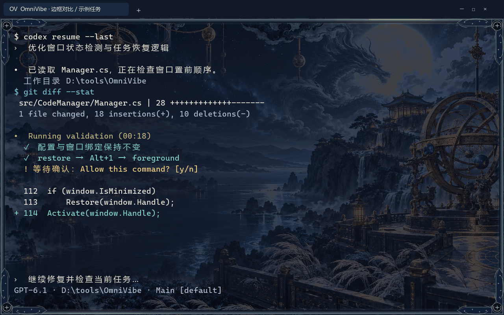
查看可选背景动效
朱砂藏锋
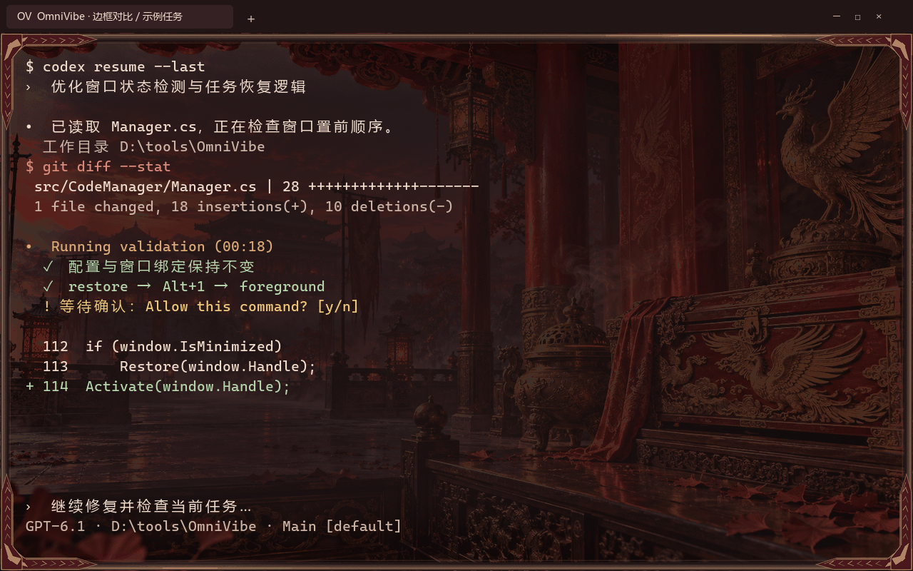
查看可选背景动效
英雄联盟 · 海克斯枢纽
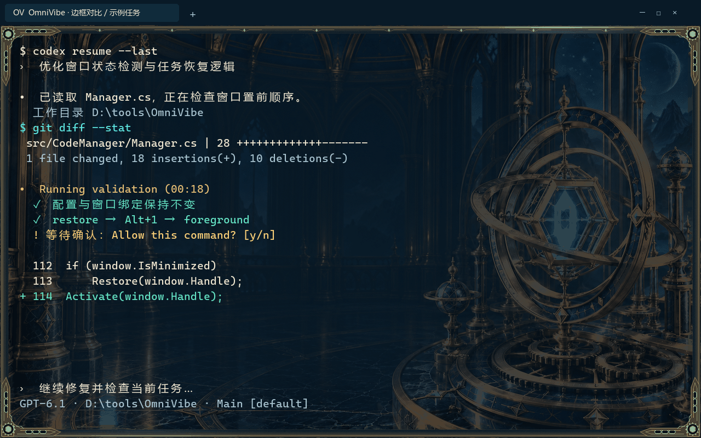
查看可选背景动效
三角洲行动 · 战术终端
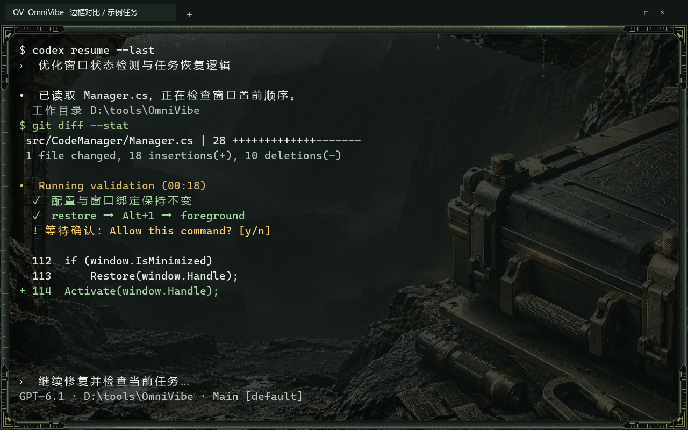
查看可选背景动效
无畏契约 · 行动协议
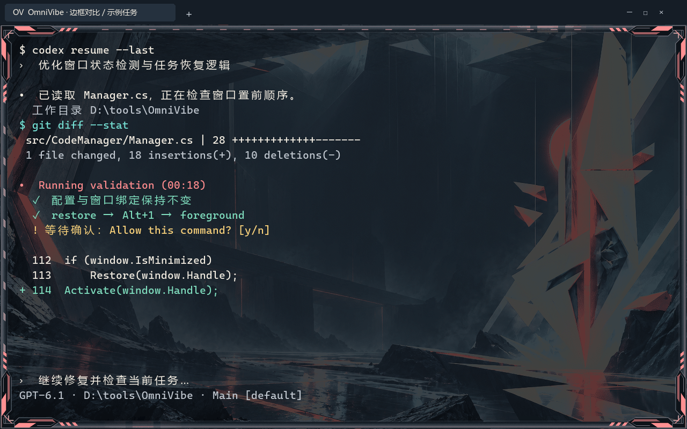
查看可选背景动效
地下城与勇士 · 冒险装备栏
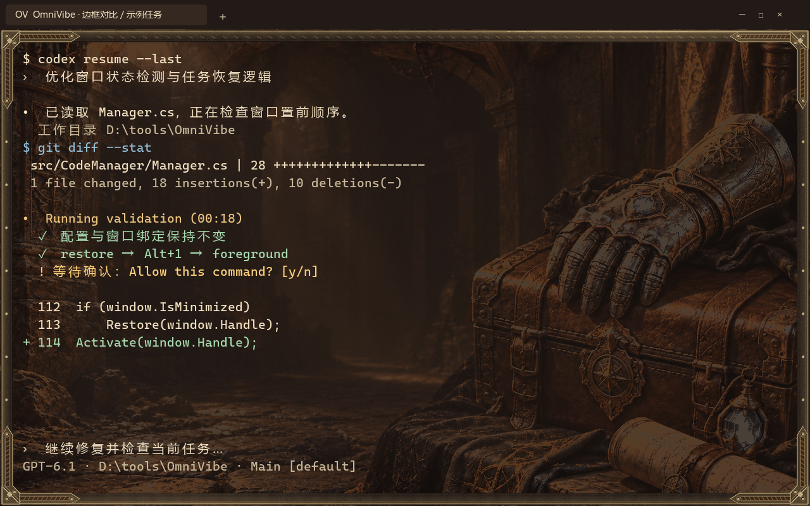
查看可选背景动效
永劫无间 · 无间兵器匣
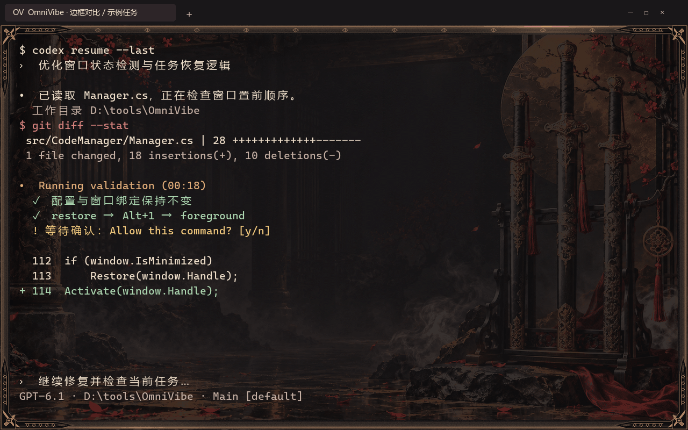
查看可选背景动效
黑神话：悟空 · 灵蕴法宝匣

查看可选背景动效
王者荣耀 · 星曜指挥台
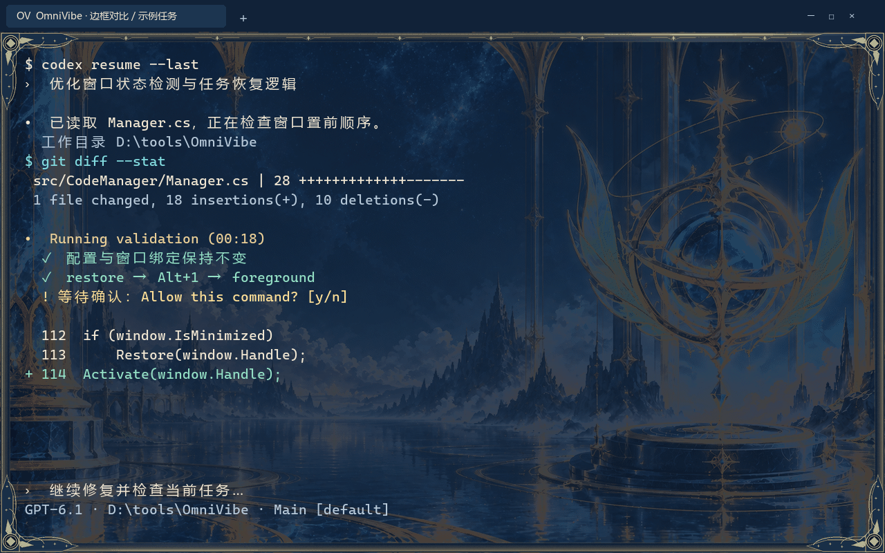
查看可选背景动效
金铲铲之战 · Agent 备战席
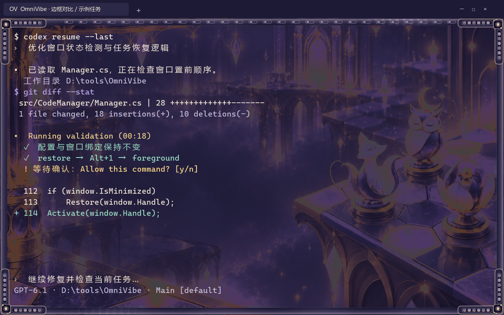
查看可选背景动效
原神 · 星旅背包
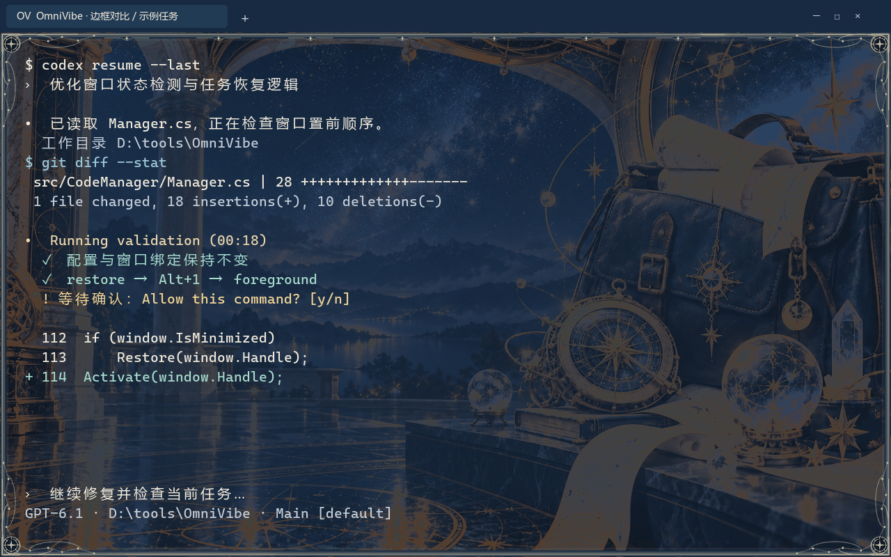
查看可选背景动效
梦幻西游 · 三界百宝袋
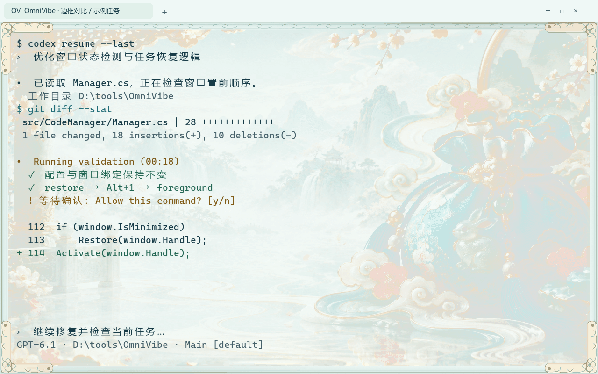
查看可选背景动效